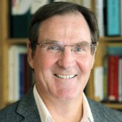

About EEGNet
A national network of neuroscience researchers bring together expertise across 10 sites and 5 provinces.
Many EEGNet researchers also form part of the Canadian Open Neuroscience Platform (CONP) as well as the Global Brain Consortium (GBC).
-

Alan C. Evans, McGill University
Alan Evans is James McGill Professor of Neurology and Psychiatry at McGill. His research covers multi-modal brain imaging and structural network modeling (www.mcin.ca). He is co-Director of the Ludmer Centre for Neuroinformatics and Mental Health, using high-performance computing to integrate imaging, behavior, genetics data in research into neurodegeneration and neurodevelopment.
Click to read moreclose
In 2014, he received the Vezina Prize for Québec Neuroradiology, the national Margolese Human Brain Disorders Prize and was a Highly Cited Scientist (146,384 citations ; top 1%) for Neuroscience and Behavior. He is a Fellow of the Royal Society of Canada and 2017 Chair of the Organization for Human Brain Mapping (OHBM). In 2016, he received the Wilder Penfield Prix du Québec. In 2017, he was awarded the Senate of Canada 150 Medal, ranked #6 in its list of ten most influential brain scientists of the modern era by Science magazine and inducted as a Fellow of the College of Academic Health Sciences. In 2018, he was awarded the Heinz Lehmann Prize for services to Neuropsychopharmacology, the Victor Dahdaleh Chair in Neurosciences and the Club de Recherches Clinique du Québec Mentorship Prize. In 2019, he was awarded the OHBM Glass Brain Award for lifetime achievement. He is currently Scientific Director of McGill’s $84M CFREF project “Healthy Brains for Healthy Lives” (www.mcgill.ca/hbhl) and Scientific Director of the Canadian Open Neuroscience Platform (www.conp.ca). CONP uses the LORIS (multimodal databasing) and CBRAIN (high-performance computing) platforms, developed at the MCIN.
Lead Investigator
-
Sid Segalowitz, Brock University
Dr. Sid Segalowitz is a Professor in the Department of Psychology and Centre for Neuroscience at Brock University, and the founding and current Director of the Jack and Nora Walker Centre for Lifespan Development Research. A native of Montreal, he received his undergraduate training at McGill University and PhD from Cornell University. His research primarily uses EEG/ERP technologies in addressing questions in cognitive and affective neuroscience, including those relating cortical responses to individual differences in personality traits and differences in age.
Click to read moreclose
Central foci have been the response of medial frontal cortex to challenges of attention and response control, and evidence for early cortical responses to processing visual information including emotional faces and words. Current developmental research involves using these measures in normative mental health in adolescents and also those with mental health challenges. His group has also been developing advances in EEG/ERP processing. His work has been funded directly by NSERC, SSHRC, and CIHR, and through collaborations by NIH, OBI, Brain Canada and several private foundations.
-
Philippe Albouy, Université Laval
Dr. Philippe Albouy is an assistant professor at the psychology department of Laval University, a regular researcher at CERVO Brain Research Centre (Quebec City) and a FRQ-S Junior 1 Scholar. He received his PhD in Neuroscience in 2013 from Lyon 1 University (France, with Dr Barbara Tillmann and Dr Anne Caclin) where he used multimodal neuroimaging approaches (MEG, fMRI, EEG, iEEG) to study the brain dynamics related to auditory perception and working memory in humans.
Click to read moreclose
In 2014, he joined the Montreal Neurological Institute of McGill University, first as a Fyssen, then as a Banting postdoctoral Fellow in the Robert Zatorre and Sylvain Baillet groups. His work focuses in the identification of the causal links between the dynamics of neural activity and human cognitive functions. In his research he combines multimodal neuroimaging data and information-based neuromodulation methods (i.e., online TMS/visual stimulation configured to match specific ongoing spatiotemporal patterns of neural activity) with the aim of causally enhancing cognitive abilities in health and disease. His overarching interests are in the translational impact of such optimized neuromodulation approaches as personalized therapeutic tools and preventive solutions for pathology-associated neurocognitive deficits. Since 2013 his worked resulted in 17 publications , including 10 as first author in high impact journals such as Science, Neuron, Brain H-index 11 number of citations >500. Dr Albouy is funded by NSERC (PI) , FRQS (PI), CIHR (co-PI) and CIFAR (HBHL, collaborator) for a total > 2M$.
-
Shirley Fecteau, Université Laval
Shirley Fecteau is an Associate Professor and holds a Canada Research Chair in Cognitive Neuroplasticity at Université Laval. She earned a PhD degree in Biomedical Sciences from University of Montreal (honor, 2005) and trained as a postdoctoral fellow and instructor at Harvard Medical School (2005-2010). She serves as Deputy Editor for Brain Stimulation Elsevier and as an Editor for Scientific Reports Nature Publishing Group. She is also Faculty at the Harvard CME Course in Transcranial Magnetic Stimulation since 2005.
Click to read moreclose
Her research primarily aims at using non-invasive neuromodulation (transcranial magnetic and electric stimulation) combined with neuroimaging (magnetic resonance imaging and electroencephalography) to understand human behaviours, cognition and psychiatric symptoms, especially in addiction, anxiety and depression. Her work has been funded by NSERC, CIHR, National Defence, QBIN, and various foundations.
-
Isabelle Blanchette, Université Laval
Isabelle Blanchette is a full professor at the École de psychologie of Université Laval. She obtained her PhD in Experimental Psychology from McGill University in 2000. After postdoctoral research at Birkbeck College, University of London, she started her career at the University of Manchester, before returning to Canada to take up a position at the Université du Québec à Trois-Rivières in 2009, where she founded the CogNAC research group (Cognition, Neuroscience, Affect et Comportement).
Click to read moreclose
Isabelle Blanchette’s research examines the link between cognition and emotion, using behavioural, psychophysiological and electrophysiological methods. Her work has helped to understand the effect of emotion on formal reasoning, as well as other mechanisms such as working memory and attention, notably using EEG/ERP. He research has also examined the links between trauma, PTSD, and cognitive function in different populations including victims of sexual abuse, police officers, and civilians exposed to war and political violence. She has worked on the cognitive correlates of the 1994 genocide against the Tutsis. Her work has been funded by NSERC, SSHRC, FRQNT, FRQS. She was associate editor of Cognition & Emotion and currently a member of several editorial boards.
-
Célyne Bastien, Université Laval
Célyne Bastien studies the psychological and physiological aspects of insomnia to understand its effects on people and to find ways of treating them. She is particularly interested in the mechanisms of sleep protection (which make it possible to remain asleep) and compares the objective quality (measured in the laboratory) and the subjective quality (reported by the individuals) of sleep in good sleepers and insomniacs.
Click to read moreclose
Dr. Bastien studies the activity of the brain during sleep by electroencephalogram, which allows her to identify sleep characteristics of insomniacs that distinguishes it from the sleep of good sleepers. Neurophysiological and neuropsychological measures are also used to compare the objective and subjective quality of sleep and its perception. These measures allow for personalized interventions to help people adopt behaviors and attitudes that promote sleep.
Dr. Bastien has conducted studies showing that the brains of insomniacs remain in a state of hypervigilance during sleep, and that these people respond differently to stimuli (sound or visual) during sleep, but also while awake. -
Anne Gallagher, Université de Montréal
Anne Gallagher holds a Canada Research Chair (CRC) in Child Neuropsychology and Brain Imaging for her work on brain development and language and cognitive functioning in children at high-risk for neurodevelopmental disabilities and multimodal neuroimaging (mostly near infrared spectroscopy, or NIRS, and electroencephalography, or EEG). Dr. Gallagher is an Associate Professor in the Department of Psychology at the Université de Montréal. She is also a scientist at CHU Sainte-Justine, where she directs the cutting-edge, CFI-funded Neurodevelopmental Optical Imaging Laboratory (www.lionlab.umontreal.ca). She has received substantial new investigator salary awards from CIHR (2013–2019), FRQS (2013–2019) and now CRC (2019-2024).
Click to read moreclose
As a pediatric neuropsychologist, she has built a multidisciplinary and innovative research program including clinicians and researchers with applied or methodological backgrounds. Using cutting-edge multimodal neuroimaging, a significant part of her research program is dedicated to language and brain development in clinical populations. Her research in epilepsy (SickKids/CIHR, FRQS, Savoy Foundation funded) has pioneered the development of presurgical imaging techniques using NIRS-EEG (Montreal) and MEG-EEG (Boston). She led the implementation of these methods in clinical environments (CHU Sainte-Justine, CHUM, Massachusetts General Hospital) where they are now routinely used with patients with severe epilepsy, reducing the need for or extent of invasive investigations, thus significantly decreasing the risk of surgical complications. Anne was awarded the 2016 Junior Investigator Award by the Canadian League Against In 2013, she started a large research initiative on the neurodevelopmental outcomes of children with congenital heart disease (HSFC, RBIQ funded). More specifically, this work aims to better understand the impact of congenital heart disease on neurodevelopment, identify early neuroimaging markers predictive of neurodevelopmental outcomes, and provide early intervention in young children at high risk of disabilities. In the same line of research, she identified early EEG markers of language development in preemies, work that propelled a large starting project on the impact of neonatal hypoglycemia on the visual and cognitive development of preemies (CIHR funded).
-
Sarah Lippé, Université de Montréal
Neurodevelopmental disorders prevalence reach 10 to 17% in the general population. Their repercussions are life long and reduce significantly academic achievement, employability and quality of life. My research contributes to our ability to identify cognitive impairments early during development and disentangles the mechanisms leading to learning deficits, in order to target efficient interventions.
Click to read moreclose
My work culminates to the empirical evidence that learning brain responses and network connectivity can be measured during infancy, and that their alterations predict cognitive impairments severity in several neurodevelopmental disorders. Published in neuroscience and medical journals, my work has revealed the developmental course of sensory brain responses, signal complexity and connectivity, elucidated networks of sensory learning and proved the usefulness of EEG brain responses to study atypical learning and network disturbances. Currently, I lead EEG phenotyping of two international Fragile X Syndrome and Autism Spectrum Disorders clinical trials involving multidisciplinary teams of researchers from the POND, the EU-AIMS and the MIND institute, creating bridges between international teams involved in neurodevelopmental disorders cohorts in order to better understand risks and resilience factors favoring intervention responses. I also innovatively deeply phenotyped hundreds of children with genetic risks (Brain Canada cohorts) to better understand trajectories to target as early as possible children that would benefit from timely interventions. I have more than 73 scientific publications, more than 200 citations per year since 2018 and several articles being cited more than 100 times. My leadership in the study of neurodevelopmental disorders is confirmed by several awarded grants and by the recognition from my peers through their invitations to collaborate on national network initiatives and clinical trials. Thanks to the Brain Plasticity and Plasticity Analysis platform (BAPA) and collaborations with Dre Annette Schenck, my scientific program now includes translational research, benefiting from the human, mice and Drosphophila models research, fostering discoveries on the mechanisms behind neurodevelopmental disorders and on treatments. My contributions include expertise in analyses pipeline developments, cohort testing and data sharing.
-
Ingrid Johnsrude, University of Western Ontario
Dr Johnsrude (PhD McGill, 1997) is Professor and Western Research Chair at Western University, and Director of Western’s Brain and Mind Institute. She trained as a clinical neuropsychologist but for the last 20 years has been using neuroimaging (particularly EEG and fMRI) and psychoacoustic methods to study the importance of knowledge in guiding auditory and speech perception. Dr Johnsrude is the author of more than 100 peer-reviewed publications which have been cited over 22,500 times (Google Scholar). She has won multiple awards for her research, including the EWR Steacie Fellowship (2009).
-
Adrian Owen, University of Western Ontario
Adrian M. Owen OBE, PhD is currently a Professor of Cognitive Neuroscience and Imaging in the Departments of Physiology & Pharmacology and Psychology at the University of Western Ontario, Canada. He also directs the Azrieli program in Brain, Mind, and Consciousness funded by the Canadian Institute for Advanced Research (CIFAR) and is on the Executive Committee of the CFREF funded initiative BrainsCAN at the University of Western Ontario, Canada.
Click to read moreclose
Dr. Owen was previously the Assistant Director of the Medical Research Council Cognition and Brain Sciences Unit at Cambridge University and the Canada Excellence Research Chair in Cognitive Neuroscience and Imaging at Western University. His research combines structural and functional neuroimaging with neuropsychological studies of brain-injured patients and has been published in many of the world’s leading scientific journals, including Science, Nature, The New England Journal of Medicine and Lancet. Adrian Owen is best known for showing that functional neuroimaging can reveal conscious awareness in some patients who appear to be entirely vegetative and can even allow some of these individuals to communicate their thoughts and wishes to the outside world. These findings have attracted widespread media attention on TV, radio, in print and online and have been the subject of many TV and radio documentaries. Dr. Owen has played multiple editorial roles, including 8 years as Deputy Editor of The European Journal of Neuroscience. He has published over 300 peer-reviewed articles and chapters and a best-selling popular science book ‘Into the Gray Zone: A Neuroscientist Explores the Border Between Life and Death. Dr. Owen was recently awarded Officer of the Most Excellent Order of the British Empire (OBE) in the Queen’s Honors List, 2019, for services to scientific research.
-
Jorge Bosch-Bayard, McGill University
Jorge F. Bosch-Bayard worked as a computer scientist at the Cuban Neuroscience Center from 1984-2014, and a Senior Researcher of the Cuban Academy of Sciences from 2009. From 2014 to 2018, he was an Associate Researcher at the Institute for Neurobiology, UNAM, Mexico. Since 2019, he has been a Research Assistant at the MNI in Canada. He works on methods for the processing, analysis and statistical of multimodal neuroimages (EEG/MEG, MRI, fMRI, DWI).
Click to read moreclose
He specializes in (i) quantitative EEG analysis for the estimation of the current density at the EEG generators in the brain ( ii) statistical methods focused on high dimensional data sets (iii) methods for the estimation of brain connectivity, based on the analysis of correlation matrices as well as on the flow of information among different brains sites, derived from multivariate auto-regressive time series models (iv) algorithms for solving the leakage problem at the EEG sources. (v) robust algorithms for solving the classification problem in high dimensional spaces with small samples. He is an organizer of the Cuban Human Brain Mapping project, responsible for data collection, curation, analysis and statistical assessment of the results.
-
Jean Gotman, McGill University
Dr. Jean Gotman is a Professor of Neurology and Neurosurgery at the Montreal Neurological Institute. He is recipient of the Pierre-Gloor Award from the American Clinical Neurophysiology Society (2000), the Epilepsy Research Recognition Award for Clinical Sciences from the American Epilepsy Society (2005), the Wilder Penfield Award from Canadian League against Epilepsy (2006), the Ambassador for Epilepsy from International League against Epilepsy (2015), and the Jasper Award for lifetime achievement from the American Clinical Neurophysiology Society (2019).
Click to read moreclose
Dr. Gotman’s laboratory investigates the mechanisms of generation of epileptic discharges as recorded in the electroencephalogram (EEG) of epileptic patients. His work aims to improve both our understanding of epileptogenesis and our diagnostic techniques. Combining functional imaging techniques (fMRI) and EEG in a novel non-invasive approach, his group studies the brain regions in which abnormal activity is taking place when a discharge occurs. The laboratory also analyzes patterns of High Frequency Oscillations recently discovered in the EEG, which could improve the ability to localize epileptogenic regions and to understand better epileptogenesis.
-
Birgit Frauscher, McGill University
Dr. Birgit Frauscher, Associate Professor of Neurology at McGill University, is a Board-certified Neurologist with a subspecialty training in Clinical Neurophysiology, Epilepsy and Sleep and a research background in clinical neuroscience. She is the director of the Analytical Neurophysiology Lab (https://mcgill.ca/frauscher-lab/), and serves as attending epileptologist and neurophysiologist coordinating the intracranial EEG program at the Montreal Neurological Institute & Hospital.
Click to read moreclose
She has built an internationally recognized research program that seeks to identify new ways to identify the epileptogenic zone using EEG with the ultimate aim to achieve a more accurate, less invasive, and time-saving diagnosis of epilepsy. Her major achievements related to this application are the creation of a first 3D atlas of physiological brain activity using invasive intracranial EEG (iEEG) in order to better delineate normal from abnormal iEEG activity as well as the development of novel ways for identification of the epileptogenic zone. Her research has been awarded by both national and international awards (i.e. Michael Prize 2019 of the International League against Epilepsy, salary award of the Fonds de Recherche au Quebec – Santé 2018-2021, European Young Investigator Award 2018, Ernst Niedermayer Award 2015 of the Austrian Epilepsy Society). Her program is supported through diverse funders (e.g. FRQS, CIHR, Savoy Epilepsy Foundation). She has published >135 peer-reviewed articles (53 as first/senior author) with an h-index of 47.
-
Mayada Elsabbagh, McGill University
Dr. Mayada Elsabbagh is Assistant Professor (Tenure Track) in Neurology and Neurosurgery at The Neuro of McGill University. She holds appointments as a Research Scientist at the McGill University Health Centre and the Douglas University Mental Health Institute where her program is integrated with routine care. Her research focuses on understanding the root causes of autism and tracing its developmental pathways. The approach combines innovative research with the mission of accelerating translation of scientific discoveries into community impact.
Click to read moreclose
Dr. Elsabbagh’s contributions include the discovery of very early brain function markers for autism prior to the onset of behavioural signs. She has supported the successful launch of several collaborative research and translational networks aimed at accelerating the pace of discovery in autism. This includes the Transforming Autism Care Consortium (TACC), a Quebec research network supported by FRQS and several community partners. She is also active in global efforts to improve evidence-based practice in the community and capacity building in low- and middle-income countries. The public value and social relevance of Dr. Elsabbagh’s research has been recognized through various awards including the Neville Butler Memorial Prize and the British Psychological Society Neil O’Connor Prize.
-
Stefon van Noordt, McGill University
Dr. Stefon van Noordt is a Research Associate and Scientific Team Lead of the Azrieli Centre for Autism Research at the Montreal Neurological Institute, McGill University. He received his undergraduate and graduate training at Brock University, and completed postdoctoral fellowships at the Yale University Child Study Centre and Montreal Neurological Institute.
Click to read moreclose
His research primarily uses EEG and eye-tracking technologies to examine the developmental neural underpinnings of sensory and cognitive processing, in particular how they relate to risk and outcome in autism and similar neurodevelopmental disorders. In addition, his work focuses on ‘big data’ – large data sets that can be analyzed to reveal complex multivariate patterns – to identify reliable EEG biomarkers that relate to to risk factors, early diagnosis, and treatment outcomes. He has contributed to the development of novel paradigms, standardized methods for batch pre-processing of EEG data, integrated platforms for harmonizing multi-site EEG data, and robust statistics for single trial and single subject analyses. His work has been funded by CIHR, NSERC, TACC/FRQS, and most recently through a NARSAD Young Investigator Grant from the Brain and Behaviour Foundation.
-

Stefanie Blain-Moraes, McGill University
Dr. Stefanie Blain-Moraes is the Canada Research Chair in Consciousness and Personhood Technologies, and the director of the Biosignal Interaction and Personhood Technology lab at McGill University. An assistant professor in the School of Physical and Occupational Therapy, she is trained in rehabilitation engineering (Ph.D., University of Toronto) and in biomedical engineering (B.A.Sc., University of Toronto).
Click to read moreclose
Her research applies physiological signal processing techniques and assistive technology design principles to address the needs of non-communicative individuals and their care providers. The overall objectives of her research are: 1) To advance the understanding of the neurophysiological and physiological basis of human consciousness and interaction and 2) to translate this understanding into technologies that improve the quality of life of non-communicative persons and their caregivers. She is currently using high-density EEG combined with neuromodulation to develop diagnostic and prognostic measures for patients in disorders of consciousness. She has been a Principle Investigator on grants from NSERC, CIHR and SSHRC.
-
Faranak Farzan, Simon Fraser University
Dr. Farzan is the Chair in Technology Innovations for Youth Addiction Recovery and Mental Health and Assistant Professor at School of Mechatronic Systems Engineering at Simon Fraser University (SFU) Dr. Farzan is the Founder and Scientific Director of Centre for Engineering-Led Brain Research (eBrain Lab), a major Core Facility at SFU and Surrey Memorial Hospital. She is also Director of an embedded neurotechnology research laboratory at John Volken Academy, a long-term addiction recovery program in City of Surrey.
Click to read moreclose
Dr. Farzan is also the EEG lead of the Canadian Biomarker Integration Network in Depression. Prior to joining SFU, Dr. Farzan was Assistant Professor of Psychiatry at University of Toronto, and Independent Scientist at Centre for Addiction and Mental Health, and she continues to hold appointments at both Institutes. Dr. Farzan has obtained her Bachelor of Engineering in Dual Degree of Electrical and Biomedical Engineering from McMaster University in 2006, her PhD in the Collaborative Program of Biomedical Engineering and Medical Science from University of Toronto in 2010. She obtained her Postdoctoral training in Cognitive Neurology from Harvard Medical School in 2013. Dr. Farzan is leading an interdisciplinary research program across several established disciplines of engineering, neuroscience, computer science and psychiatry. Her research program is aimed at development and practical implementation of neurotechnology for studying brain health and function, and for diagnosis and treatment of neuropsychiatric disorders particularly in youth. Dr. Farzan has been a pioneer in establishing a brain mapping methodology that involves concurrent combination of Transcranial Magnetic Stimulation and Electroencephalography (TMS-EEG). Dr. Farzan’s research program has received funding from prestigious agencies such as Michael Smith Foundation for Health Research, CIHR, NIMH, NSERC, CFI, NARSAD, Brain Canada, Kids Brain Health Network, and GRAMMY Foundation.
-
Sean Hill, University of Toronto
Dr. Sean Hill is the Director of the Krembil Centre for Neuroinformatics, Senior Scientist at the Centre for Addiction and Mental Health (CAMH), and Professor at the University of Toronto. Dr. Hill is a computational neuroscientist with experience in building large-scale computational models of brain circuitry.
Click to read moreclose
The Centre collaborates with clinicians and researchers, employing neuroinformatics, artificial intelligence, and multiscale modeling, to develop data-driven definitions of brain disorders, predict patient trajectories, and transform mental health care. Dr. Hill applies large-scale data integration, neuroinformatics, multiscale brain modeling and machine learning to improve our understanding and treatment of mental health disorders.The Centre’s mandate is to accelerate global collaborations in brain science using the power of big data and brain modelling to fundamentally change how mental illness is understood.
-
Signe Bray, University of Calgary
Dr. Signe Bray is an Associate Professor in the Department of Radiology at the University of Calgary and the Scientific Director of the Child and Adolescent Imaging Research (CAIR) Program based at the Alberta Children's Hospital. She is originally from Ontario, Canada, and completed undergraduate training at the University of Waterloo, graduate work at the California Institute of Technology and postdoctoral training at Stanford University and the University of Calgary.
Click to read moreclose
Her research uses functional and structural magnetic resonance imaging (MRI) to study brain development and the effects of neurodevelopmental conditions, including Autism Spectrum and preterm birth, on the brain. She collaborates extensively with researchers in many areas of neurodevelopment and child and adolescent mental health. Her work has been funded by CIHR, NSERC and the SickKids Foundation.
-
Ashley Harris, University of Calgary
Dr. Ashley D Harris is an Assistant Professor in the Department of Radiology at the University of Calgary and a full member of both the Hotchkiss Brain Institute and the Alberta Children’s Hospital Research Institute. She received her undergraduate degrees in Biological Engineering (BEng) and Biological Sciences (BSc) from Dalhousie University prior to receiving her PhD in Biomedical Engineering from the University of Calgary.
Click to read moreclose
Having completed post-doctoral fellowships at Cardiff University investigating functional MRI methods and at then at Johns Hopkins School of Medicine in magnetic resonance spectroscopy, she is now interested in using imaging to investigate the balance of excitation and inhibition in the brain in both typical, healthy development and aging as well as to understand clinical conditions. As such, EEG provides a method to investigate excitation and inhibition, particularly in challenging populations such as young children with developmental disorders who are not compliant with MR imaging. Her work is funded by NSERC, a New Frontiers Research Fund Exploration Award, the SickKids Foundation/CIHR as well as internal University of Calgary Reseach Grant, the McCaig Institute for Bone and Joint Research and Hotchkiss Brain Institute funding programs.
-
Erin Panda, Brock University
Dr. Erin Panda is an Assistant Professor in the Department of Child and Youth Studies and the Co-Director of the Developmental Neuroscience Laboratory at Brock University. Originally from southern Georgian Bay Ontario, she received her undergraduate training at Queen’s University and her PhD from McGill University. She then completed two postdoctoral research fellowships at the Hospital for Sick Children (Sickkids) in Learning Disabilities and in Neurosciences and Mental Health.
Click to read moreclose
Her primary research area – Educational Neuroscience – uses EEG to understand how the brain processes language, and how these processes change with development, learning and remediation. She is particularly interested in tracking developmental changes to the functional brain networks that children use while reading, listening to speech and during attention tasks. Working in collaboration with community partners (e.g., local school boards), another arm of her research evaluates how evidence-based educational programs can improve learning outcomes, especially for children/youth who struggle with reading and/or attention. Her work has been funded by the Ontario Brain Institute, Quebec’s FQRSC and NSERC.
-
Ayda Tekok-Kilic, Brock University
Dr. Tekok-Kilic is a clinical and cognitive neuroscientists whose major research focus is anxiety and attention deficit spectrum. She studies cognitive, sensory and temperamental aspects of cognitive control and emotion regulation in youth and emerging adults with anxiety and attentional difficulties. Overarching goal of her program is to translate research into targeted assessments and interventions in mental health.
Click to read moreclose
She collaborates closely with local mental health agencies. She is the director of Developmental Neuroscience Laboratory (DNLab) housed in CHYS and Cognition and Anxiety Laboratory (CANLab) located at the Pathstone Children’s Mental Health Research Institute. Dr. Tekok-Kilic uses neuro-cognitive tests, self-report questionnaires and neurophysiological measures (EEG, eye-movements and pupillometry) in studying brain-cognition/emotion. Dr. Tekok-Kilic is a supporting core faculty of Brock U. Neuroscience undergraduate program.
-
Christine Lackner, Mount St Vincent University
Christine Lackner did her PhD at Brock University under the direction of Dr. Sidney Segalowitz, an internationally recognized electrophysiologist receiving regular research support from the tri-council. Lackner has received tri-council funding to support both her doctoral studies (NSERC PGS-D, 2009-2012) and her ongoing program of research (SSHRC Explore). She is actively involved in large research projects funded by national (e.g., CIHR) and provincial (e.g., Ontario Brain Institute) funding bodies.
Click to read moreclose
Six of her seven publications in the last five years focus on cognitive-developmental electrophysiology, demonstrating her expertise in the subject matter which this proposal supports. Lackner's research focus is on understanding individual differences in self-regulation of behaviour and cognition across childhood, adolescence, and young adulthood using a neuroscientific and behavioural approach.
-
Karen Campbell, Brock University
Karen Campbell is an Assistant Professor and Canada Research Chair in the Department of Psychology at Brock University. She completed her PhD in Psychology at the University of Toronto, followed by postdoctoral fellowships at the University of Cambridge and Harvard University.
Click to read moreclose
Her research focuses on the cognitive and neural changes that accompany normal human aging. Specifically, she combines neuroimaging techniques (fMRI, EEG) with cognitive-behavioural methods (including eye-tracking) to determine how age differences in attentional control affect other cognitive processes (such as memory and language). Her work has been funded by NSERC, CFI, and the Ontario Ministry of Research, Innovation and Science (Early Researcher Award).
-
Teena Willoughby, Brock University
Dr. Teena Willoughby is a Professor in the Department of Psychology at Brock University and is the Associate Director of the Jack and Nora Walker Centre for Lifespan Development Research. She received her undergraduate training at Western University and PhD from University of Waterloo. She followed that with a Postdoctoral Fellowship at the University of Toronto.
Click to read moreclose
Her research focuses on adolescent development, particularly addressing two main questions: (1) Is adolescence a sensitive period for development (e.g., brain development, peer sensitivity, emotional reactivity), resulting in both unique vulnerabilities and opportunities, and (2) What predicts the individual differences found among adolescents with regard to health-risk behaviors and mental health. To address these questions, she conducts longitudinal studies using a variety of tools, including EEG/ERP, impedance cardiography and heart rate variability, actigraphs, and surveys. Her work has been funded by SSHRC, NCE, CFI, OIT, CIHR, and private foundations.
-
Gavin Winston, Queen's University
Dr Gavin Winston is an Associate Professor in the Department of Medicine at Queen’s University and a faculty member of the Centre for Neuroscience Studies since 2019. He is an Honorary Associate Professor in the UCL Queen Square Institute of Neurology, Queen Square, London where he was previously an MRC Clinician Scientist (2015-2018).
Click to read moreclose
Dr Winston undertook his medical degree at the University of Cambridge and University of Oxford and his subsequent neurology training was at the National Hospital for Neurology and Neurosurgery (NHNN), Queen Square and the Royal Free Hospital, London. He received his PhD in Neuroimaging of Epilepsy from University College London supported by an MRC Clinical Research Training Fellowship and supervised by Professor John Duncan.
He received the Sir Peter Mansfield Prize for innovative technical developments in the field of magnetic resonance in medicine and biology from the British Chapter of the ISMRM in 2011 and his work has featured in the BBC television programme "How Science Changed Our World" describing the top ten scientific breakthroughs in the past 50 years. He was awarded an American Epilepsy Society Young Investigator Award and ILAE Europe Leadership Development Scholarship in 2018.
Dr Winston was a member of UCL Academic Board (2010-2016) and undertakes peer review for over 30 international journals and grant awarding bodies and has been on the editorial board of Quantitative Imaging in Medicine and Surgery since its inception. He has published around 50 peer-reviewed papers, chaired sessions at international conferences, given invited lectures internationally and also spoken at events aimed at the general public.
Co-Investigators
EEGNet research network
Related Publications
- Bosch-Bayard, J. et al., 2020. A Quantitative EEG Toolbox for the MNI Neuroinformatics Ecosystem: Normative SPM of EEG Source Spectra. Front. Neuroinform. doi:10.3389/fninf.2020.00033
- Frauscher, B. et al., 2018. Atlas of the normal intracranial electroencephalogram: Neurophysiological awake activity in different cortical areas. Brain. https://doi.org/10.1093/brain/awy035
- van Noordt, S., et al. 2020 EEG-IP: an international infant EEG data integration platform for the study of risk and resilience in autism and related conditions. Mol Med 26, 40 (2020). doi:10.1186/s10020-020-00149-3